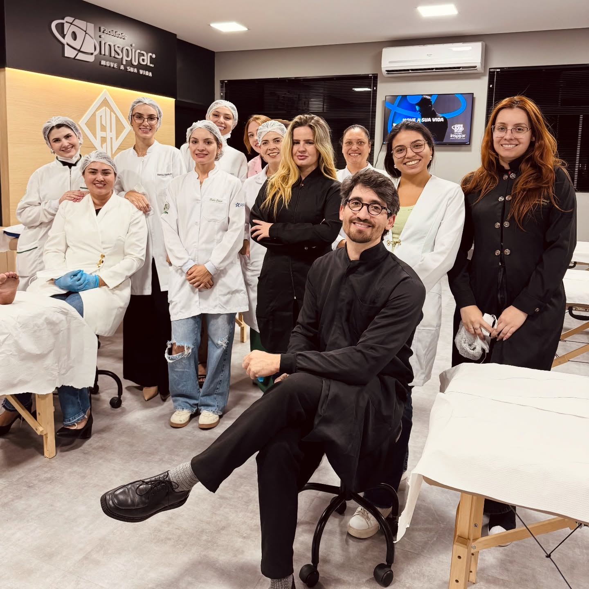

Hospital Santa Cruz
Fisioterapeuta Pélvico / Hospitalar
Atendimento ambulatorial e hospitalar multidisciplinar com carga horária de 30h semanais.
Graduado / Pós
CLT
Curitiba - PR
Acesso exclusivo para a comunidade Inspirar. Conectamos estudantes a estágios e trainees de excelência, e profissionais pós-graduados a posições de liderança e contratações diretas em hospitais e clínicas.


Seja conquistando o primeiro estágio ou recrutando os melhores profissionais de saúde, o Conexão Inspirar é o caminho mais direto e confiável.
Acesso a vagas de estágio curricular e extracurricular nos principais hospitais e clínicas parceiras de Curitiba e região desde os primeiros períodos.
Para quem já concluiu a graduação ou está na pós: contratações efetivas (CLT/PJ), vagas especializadas em UTI, Gerontologia, Fonoaudiologia e liderança.
Sem etapas ocultas ou formulários intermináveis. Envie sua candidatura diretamente para o WhatsApp ou e-mail do RH com o respaldo oficial da Inspirar.
Receba candidatos com vivência real de estágio e pós-graduação nos maiores centros de saúde do Paraná e do país, com formação prática comprovada.
Sem burocracia de plataformas pesadas. Crie sua oportunidade e defina se prefere receber candidatos diretamente no seu WhatsApp ou e-mail corporativo.
Conecte-se com mais de 99.000 profissionais em Curitiba, polos de ensino em diversos estados e estudantes do Polo Luanda para vagas presenciais ou remotas.
Exemplos reais de vagas publicadas por parceiros que contratam na comunidade Inspirar.
Atendimento ambulatorial e hospitalar multidisciplinar com carga horária de 30h semanais.
Atuação em Unidade de Terapia Intensiva com pacientes de alta complexidade. Escala 12x36.
Avaliação e reabilitação vestibular de pacientes com queixas de tontura e vertigem.
Suporte consultivo a instituições médicas, conformidade LGPD e contratos hospitalares.
Relatos reais de alunos e formados que aceleraram a carreira e assumiram posições de destaque através da formação Inspirar.
"De técnica de enfermagem a coordenadora no Hospital Vita Batel, a Inspirar e a Profisio foi o divisor de águas na minha vida.
A Pós em Terapia Intensiva Treinamento em Serviço foi a base de tudo: em plena pandemia, passei por hospitais como o de Reabilitação, HT, Osvaldo Cruz e Vita, aprendendo na prática a ser a fisioterapeuta intensivista que sou hoje. Mais do que abrir portas no mercado, a Inspirar e a Profisio acreditaram no meu potencial em cada etapa, oferecendo capacitação contínua e um suporte humano incrível das lideranças. Hoje, assumir essa posição de liderança junto à empresa que me formou é a realização de um ciclo de muita dedicação e gratidão. Que orgulho imenso de ser Inspirar e Profisiana!"

"A Pós-Graduação em Terapia Intensiva me ensinou muito mais do que técnica, me ensinou propósito. Minha trajetória na UTI ganhou um significado ainda mais profundo durante meu treinamento em serviço pela Inspirar, um período que abriu portas para um universo de conhecimento, prática e crescimento profissional. Foi ali que deixei de apenas estudar a fisioterapia intensiva e passei a vivê-la de forma real, intensa e transformadora.
Atuar na UTI em meio à pandemia de COVID-19 foi um dos maiores desafios da minha vida e também um dos maiores aprendizados. Estar na linha de frente me trouxe experiência, maturidade e um olhar ainda mais humano sobre cada paciente. Aprendi a lidar com a imprevisibilidade, a valorizar cada pequena evolução e, acima de tudo, a entender o verdadeiro impacto do nosso trabalho.
Hoje, carrego comigo não apenas um currículo fortalecido, mas histórias, vivências e a certeza de que cada atendimento pode transformar uma vida. E quando falamos de terapia intensiva, muitas vezes estamos falando de devolver o bem mais precioso: a chance de respirar, de viver, de recomeçar. Tenho orgulho da profissional que me tornei, construída com dedicação, resiliência e amor pelo que faço."

"Escolher a Pós-Graduação na Faculdade Inspirar foi uma escolha que transformou profundamente minha trajetória, ampliando meu olhar clínico, fortalecendo minha segurança profissional e abrindo inúmeras portas ao longo do caminho.
A formação também expandiu minhas possibilidades de atuação, permitindo vivências não só na UTI, mas também na enfermaria hospitalar e no atendimento home care, o que trouxe ainda mais versatilidade e maturidade para a minha prática. Hoje, iniciando na coordenação, tenho ainda mais clareza do quanto essa especialização foi essencial para a profissional que me tornei.
Após toda a vivência prática e os desafios enfrentados na rotina clínica, compreendi a real necessidade de buscar uma especialização. Foi nesse momento que encontrei uma formação que me proporcionou não apenas conhecimento técnico, mas também pensamento crítico, segurança e autonomia. Essa especialização me deu todas as ferramentas necessárias para uma atuação mais completa e segura como fisioterapeuta, impactando diretamente na qualidade do cuidado que entrego aos meus pacientes. Gratidão por todo o aprendizado!"

"A especialização oferecida pela Faculdade Inspirar, em parceria com a Fonoaudiálogo, representa uma oportunidade valiosa para o crescimento profissional na Fonoaudiologia.
Essa união traz um ensino de qualidade, alinhado às demandas atuais do mercado, com professores experientes e uma abordagem atualizada com estudo de vários casos clínicos. Em um campo que evolui constantemente, manter-se atualizada é essencial para oferecer o melhor atendimento, conquistar novos espaços de atuação e se destacar na carreira. Investir em conhecimento é investir no futuro! Já estou finalizando a minha segunda especialização com a Faculdade!"

"A pós de Gerontologia on-line da Faculdade Inspirar me fez adquirir muito conhecimento durante esses meses.
Sou mais apaixonada ainda pela área da gerontologia e pude descobrir com clareza minha área de atuação! A formação abriu as portas do mercado de trabalho e me senti extremamente preparada para os desafios profissionais. Escolher uma pós online facilitou muito a minha rotina e organização de tempo."
Centros de excelência médica onde atuam alunos e formados da Faculdade Inspirar